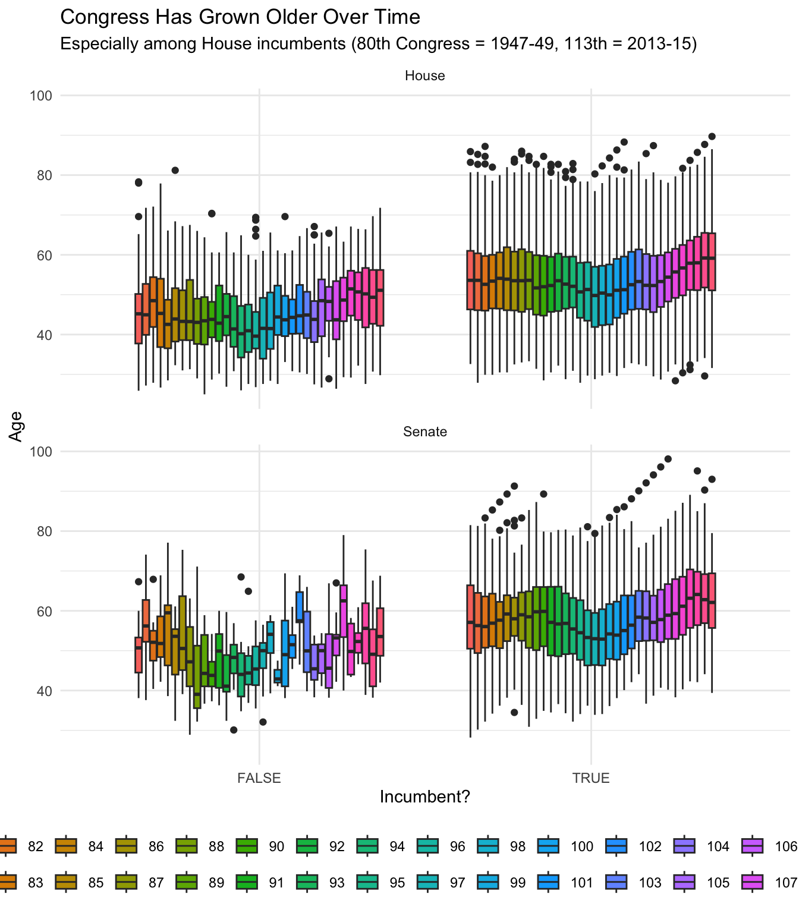

12 Visualizing Relations between Variables
12.1 Learning Objectives
- Create and interpret boxplots to compare distributions across groups
- Master scatterplots for examining relationships between continuous variables
- Use
facet_wrap()to create small multiples for comparative analysis - Combine multiple visual elements (color, shape, faceting) to display 3-4 variables simultaneously
- Choose the appropriate visualization for different types of variable relationships
12.2 What Is This For?
In the previous session, we learned how to visualize single variables - the distribution of ages, the frequency of categories, the spread of continuous data. But in real research, we rarely care about variables in isolation. We want to know: Do wealthy countries have higher life expectancies? Does education affect political participation? Are movie critics harsher than general audiences?
These questions require us to visualize relationships between variables. Today, we’ll learn three powerful techniques:
- Boxplots for group comparisons - When you have a continuous variable and want to compare it across categories
- Scatterplots for continuous relationships - When both variables are continuous and you want to see patterns
- Faceting for deeper insights - When you need to examine relationships separately for different subgroups
By the end of this session, you’ll be able to create visualizations that reveal complex patterns in your data - the kind of insights that tables of numbers simply can’t provide.
12.3 Comparing Groups with Boxplots
12.3.1 When to Use Boxplots
Boxplots excel when you want to compare a continuous variable across different categories. They’re particularly useful because they show:
- The median (center line)
- The interquartile range (the box)
- The full spread (whiskers)
- Outliers (individual points)
All in a compact, easy-to-compare format.
12.3.2 Congressional Age Example
Let’s examine age patterns in the U.S. Congress using the FiveThirtyEight dataset. This data contains information about every member of Congress from 1947 to 2013.
# Load required packages
library(fivethirtyeight)
library(ggplot2)
library(dplyr)
# Load the congressional age data
data("congress_age")
# Examine the structure
glimpse(congress_age)## Rows: 18,635
## Columns: 13
## $ congress <int> 80, 80, 80, 80, 80, 80, 80, 80, 80, 80, 80, 80, 80, 80, 80, 80, 80, 80, 80, 8…
## $ chamber <chr> "house", "house", "house", "house", "house", "house", "house", "house", "hous…
## $ bioguide <chr> "M000112", "D000448", "S000001", "E000023", "L000296", "G000017", "W000265", …
## $ firstname <chr> "Joseph", "Robert", "Adolph", "Charles", "William", "James", "Richard", "Sol"…
## $ middlename <chr> "Jefferson", "Lee", "Joachim", "Aubrey", NA, "A.", "Joseph", NA, NA, "Laceill…
## $ lastname <chr> "Mansfield", "Doughton", "Sabath", "Eaton", "Lewis", "Gallagher", "Welch", "B…
## $ suffix <chr> NA, NA, NA, NA, NA, NA, NA, NA, NA, NA, NA, NA, NA, NA, NA, NA, NA, NA, NA, N…
## $ birthday <date> 1861-02-09, 1863-11-07, 1866-04-04, 1868-03-29, 1868-09-22, 1869-01-16, 1869…
## $ state <chr> "TX", "NC", "IL", "NJ", "KY", "PA", "CA", "NY", "WI", "MA", "VA", "KY", "IN",…
## $ party <chr> "D", "D", "D", "R", "R", "R", "R", "D", "R", "R", "D", "R", "D", "D", "D", "D…
## $ incumbent <lgl> TRUE, TRUE, TRUE, TRUE, FALSE, FALSE, TRUE, TRUE, TRUE, TRUE, TRUE, TRUE, TRU…
## $ termstart <date> 1947-01-03, 1947-01-03, 1947-01-03, 1947-01-03, 1947-01-03, 1947-01-03, 1947…
## $ age <dbl> 85.9, 83.2, 80.7, 78.8, 78.3, 78.0, 77.9, 76.8, 76.0, 75.8, 74.7, 74.0, 73.5,…First, let’s clean up the chamber variable to have proper capitalization:
# Recode chamber names for better display
congress_age <- congress_age %>%
mutate(chamber = dplyr::recode(chamber,
"house" = "House",
"senate" = "Senate"
))
# Check our recoding
table(congress_age$chamber)##
## House Senate
## 15083 355212.3.3 Creating a Basic Boxplot
Let’s compare ages between the House and Senate:
# Basic boxplot
ggplot(data = congress_age) +
geom_boxplot(aes(x = chamber, y = age)) +
labs(
x = "Chamber",
y = "Age",
title = "Senators Tend to Be Older Than Representatives",
subtitle = "Distribution of ages in the 80th-113th Congresses"
) +
theme_minimal()
Let’s break down this code:
geom_boxplot()creates the boxplot geometry- Inside
aes()(aesthetic mapping), we specify:x = chamber: The categorical variable for groups (House vs Senate)y = age: The continuous variable we’re comparing
- The
aes()function is crucial - it tells ggplot which variables in your data should control which visual properties
Notice how the boxplot immediately reveals several insights:
- The Senate median age is consistently higher (center line in each box)
- Both chambers have similar spreads (box heights are comparable)
- The House has more young outliers (individual points below the whisker)
- Very old members (80+) appear in both chambers as outliers
12.3.4 Adding a Third Variable with Color
Now let’s add incumbency status to see if the age difference is driven by new members or veterans:
# Boxplot with color for incumbency
ggplot(data = congress_age) +
geom_boxplot(aes(x = chamber, y = age, fill = incumbent)) +
labs(
x = "Chamber",
y = "Age",
title = "Incumbents Are Older in Both Chambers",
subtitle = "Age distribution by chamber and incumbency status",
fill = "Incumbent?"
) +
theme_minimal() +
scale_fill_manual(values = c("TRUE" = "#2E86AB", "FALSE" = "#A23B72"))
Here’s what changed:
- We added
fill = incumbentinsideaes()- This creates a mapping between the incumbent variable and the fill color
- ggplot automatically assigns different colors to TRUE/FALSE
- Because it’s inside
aes(), ggplot knows to create separate boxes for each value
scale_fill_manual()lets us customize the colors:- We specify exact colors for TRUE (blue) and FALSE (pink)
- Without this, ggplot would use default colors
Key concept: When you put an argument inside aes(), you’re creating a mapping between data and visual properties. When it’s outside aes(), you’re setting a fixed property for all data points.
The side-by-side boxes reveal that:
- Incumbents are older than non-incumbents in both chambers
- The age gap between chambers exists for both groups
- Non-incumbent senators are still older than non-incumbent representatives
12.3.5 Using Facets Instead of Colors
Sometimes, faceting provides clearer comparisons than colors:
# Using facets for chamber comparison
ggplot(data = congress_age) +
geom_boxplot(aes(x = incumbent, y = age)) +
facet_wrap(~chamber) +
labs(
x = "Incumbent?",
y = "Age",
title = "Age Patterns Are Similar Across Chambers",
subtitle = "Incumbency creates a larger age gap than chamber membership"
) +
theme_minimal()
Notice the changes:
- We switched what’s on the x-axis: now
x = incumbent - We removed the
fillaesthetic - back to single-colored boxes facet_wrap(~chamber)creates separate panels:- The
~(tilde) is R’s formula notation - It means “create facets by the chamber variable”
- Each unique value of chamber gets its own panel
- The
Faceting makes it easier to focus on the incumbency comparison within each chamber. You can directly compare the TRUE vs FALSE boxes without the visual interference of different colors.
12.3.6 Visualizing Change Over Time
Let’s push our visualization further by examining how these patterns have changed over the decades:
# Convert congress number to factor for discrete colors
congress_age$congress <- as.factor(congress_age$congress)
# Create a complex visualization
ggplot(data = congress_age) +
geom_boxplot(aes(x = incumbent, y = age, fill = congress)) +
facet_wrap(~chamber, ncol = 1) +
labs(
x = "Incumbent?",
y = "Age",
fill = "Congress",
title = "Congress Has Grown Older Over Time",
subtitle = "Especially among House incumbents (80th Congress = 1947-49, 113th = 2013-15)"
) +
theme_minimal() +
theme(legend.position = "bottom") +
guides(fill = guide_legend(nrow = 2))
This code combines everything we’ve learned:
fill = congressinsideaes()assigns a different color to each Congressfacet_wrap(~chamber, ncol = 1)creates one column of facets:ncol = 1stacks the panels vertically- Without this, ggplot would arrange them side-by-side
theme(legend.position = "bottom")moves the legend below the plotguides(fill = guide_legend(nrow = 2))arranges the legend in 2 rows- This prevents the legend from being too wide
Important: We converted congress to a factor first. This tells ggplot to treat each Congress as a discrete category rather than a continuous number, giving us distinct colors instead of a gradient.
This complex visualization reveals:
- A clear trend toward older members over time
- The aging is most pronounced among House incumbents
- The Senate has maintained relatively stable age patterns
12.4 Scatterplots for Continuous Relationships
12.4.1 When Two Variables Are Both Continuous
Boxplots work great when one variable is categorical. But what if both variables are continuous? Enter the scatterplot - the workhorse of data exploration.
12.4.2 Movie Ratings Example
Let’s explore how professional critics and general audiences rate movies differently. We’ll use a dataset of 651 randomly sampled movies:
# Load the movies data
MovieData <- read.csv("https://www.dropbox.com/scl/fi/v2ldpanyvhy2nb18vy20r/movies.csv?rlkey=g0tfkjuv3y4tbgsgvfx9c95sk&dl=1")
# Examine the structure
str(MovieData)## 'data.frame': 651 obs. of 32 variables:
## $ title : chr "Filly Brown" "The Dish" "Waiting for Guffman" "The Age of Innocence" ...
## $ title_type : chr "Feature Film" "Feature Film" "Feature Film" "Feature Film" ...
## $ genre : chr "Drama" "Drama" "Comedy" "Drama" ...
## $ runtime : int 80 101 84 139 90 78 142 93 88 119 ...
## $ mpaa_rating : chr "R" "PG-13" "R" "PG" ...
## $ studio : chr "Indomina Media Inc." "Warner Bros. Pictures" "Sony Pictures Classics" "Columbia Pictures" ...
## $ thtr_rel_year : int 2013 2001 1996 1993 2004 2009 1986 1996 2012 2012 ...
## $ thtr_rel_month : int 4 3 8 10 9 1 1 11 9 3 ...
## $ thtr_rel_day : int 19 14 21 1 10 15 1 8 7 2 ...
## $ dvd_rel_year : int 2013 2001 2001 2001 2005 2010 2003 2004 2013 2012 ...
## $ dvd_rel_month : int 7 8 8 11 4 4 2 3 1 8 ...
## $ dvd_rel_day : int 30 28 21 6 19 20 18 2 21 14 ...
## $ imdb_rating : num 5.5 7.3 7.6 7.2 5.1 7.8 7.2 5.5 7.5 6.6 ...
## $ imdb_num_votes : int 899 12285 22381 35096 2386 333 5016 2272 880 12496 ...
## $ critics_rating : chr "Rotten" "Certified Fresh" "Certified Fresh" "Certified Fresh" ...
## $ critics_score : int 45 96 91 80 33 91 57 17 90 83 ...
## $ audience_rating : chr "Upright" "Upright" "Upright" "Upright" ...
## $ audience_score : int 73 81 91 76 27 86 76 47 89 66 ...
## $ best_pic_nom : chr "no" "no" "no" "no" ...
## $ best_pic_win : chr "no" "no" "no" "no" ...
## $ best_actor_win : chr "no" "no" "no" "yes" ...
## $ best_actress_win: chr "no" "no" "no" "no" ...
## $ best_dir_win : chr "no" "no" "no" "yes" ...
## $ top200_box : chr "no" "no" "no" "no" ...
## $ director : chr "Michael D. Olmos" "Rob Sitch" "Christopher Guest" "Martin Scorsese" ...
## $ actor1 : chr "Gina Rodriguez" "Sam Neill" "Christopher Guest" "Daniel Day-Lewis" ...
## $ actor2 : chr "Jenni Rivera" "Kevin Harrington" "Catherine O'Hara" "Michelle Pfeiffer" ...
## $ actor3 : chr "Lou Diamond Phillips" "Patrick Warburton" "Parker Posey" "Winona Ryder" ...
## $ actor4 : chr "Emilio Rivera" "Tom Long" "Eugene Levy" "Richard E. Grant" ...
## $ actor5 : chr "Joseph Julian Soria" "Genevieve Mooy" "Bob Balaban" "Alec McCowen" ...
## $ imdb_url : chr "http://www.imdb.com/title/tt1869425/" "http://www.imdb.com/title/tt0205873/" "http://www.imdb.com/title/tt0118111/" "http://www.imdb.com/title/tt0106226/" ...
## $ rt_url : chr "//www.rottentomatoes.com/m/filly_brown_2012/" "//www.rottentomatoes.com/m/dish/" "//www.rottentomatoes.com/m/waiting_for_guffman/" "//www.rottentomatoes.com/m/age_of_innocence/" ...# Focus on key variables
MovieData %>%
select(title, critics_score, audience_score, genre, mpaa_rating) %>%
head()## title critics_score audience_score genre mpaa_rating
## 1 Filly Brown 45 73 Drama R
## 2 The Dish 96 81 Drama PG-13
## 3 Waiting for Guffman 91 91 Comedy R
## 4 The Age of Innocence 80 76 Drama PG
## 5 Malevolence 33 27 Horror R
## 6 Old Partner 91 86 Documentary Unrated12.4.3 Creating a Basic Scatterplot
# Basic scatterplot
ggplot(data = MovieData) +
geom_point(aes(x = critics_score, y = audience_score)) +
labs(
x = "Critics Score",
y = "Audience Score",
title = "Critics and Audiences Sometimes Disagree",
subtitle = "Each point represents one movie"
) +
theme_minimal()
Here’s how scatterplots differ from boxplots:
geom_point()creates points instead of boxes- Both
xandyinaes()are now continuous variables - Each observation gets its own point (unlike boxplots which summarize groups)
The pattern shows:
- A general positive relationship (critics and audiences often agree)
- Considerable scatter (they don’t always agree)
- Some movies loved by audiences but not critics (upper left)
- Some movies loved by critics but not audiences (lower right)
12.4.4 Dealing with Overplotting
When many points overlap, we lose information. Two solutions:
Solution 1: Jittering
# Add small random noise to separate overlapping points
ggplot(data = MovieData) +
geom_point(aes(x = critics_score, y = audience_score),
position = "jitter") +
labs(
x = "Critics Score",
y = "Audience Score",
title = "Jittering Reveals Hidden Points"
) +
theme_minimal()
Note that position = "jitter" is outside the aes() function:
- This is a fixed setting that applies to all points
- It adds small random noise to x and y coordinates
- The amount of jitter is automatically determined by ggplot
Solution 2: Transparency
# Make points semi-transparent
ggplot(data = MovieData) +
geom_point(aes(x = critics_score, y = audience_score),
position = "jitter",
alpha = 0.5) + # 50% transparency
labs(
x = "Critics Score",
y = "Audience Score",
title = "Transparency Shows Point Density"
) +
theme_minimal()
Here we added alpha = 0.5:
- Also outside
aes()because we want all points to have the same transparency - Values range from 0 (invisible) to 1 (solid)
- Where points overlap, the color appears darker
- This helps reveal density patterns
12.4.5 Adding a Reference Line
Sometimes it helps to add a reference line. Here’s a diagonal line representing perfect agreement:
# Add diagonal line where critics = audience
ggplot(data = MovieData) +
geom_point(aes(x = critics_score, y = audience_score),
position = "jitter", alpha = 0.5) +
geom_abline(intercept = 0, slope = 1,
color = "red", linetype = "dashed") +
labs(
x = "Critics Score",
y = "Audience Score",
title = "Most Movies Fall Below the Line of Perfect Agreement",
subtitle = "Audiences tend to rate movies higher than critics"
) +
theme_minimal()
New elements here:
geom_abline()adds a straight line defined by intercept and slopeintercept = 0, slope = 1creates the line y = x- This represents perfect agreement (critics score = audience score)
- Notice that
colorandlinetypeare outside anyaes():- We want one red, dashed line
- Not a line that varies by data values
Points above the line: audiences liked more than critics
Points below the line: critics liked more than audiences
Here’s the markdown code to add to the original worksheet where the reference line section is. You would replace the “Adding a Reference Line” section with this expanded version:
Now let’s add a trend line to see the actual relationship in our data:
# Add both reference line and smoothed trend line
ggplot(data = MovieData) +
geom_point(aes(x = critics_score, y = audience_score),
position = "jitter", alpha = 0.5) +
geom_abline(intercept = 0, slope = 1,
color = "red", linetype = "dashed") +
geom_smooth(aes(x = critics_score, y = audience_score),
method = "lm", se = FALSE, color = "blue") +
labs(
x = "Critics Score",
y = "Audience Score",
title = "Audiences Are Generally More Generous Than Critics",
subtitle = "Blue trend line shows actual relationship; red dashed line shows perfect agreement"
) +
theme_minimal()## `geom_smooth()` using formula = 'y ~ x'
The geom_smooth() function adds a smoothed line through the data:
method = "lm"fits a straight line (linear model)se = FALSEremoves the confidence interval shading- The blue line shows the actual average relationship
- Notice it has a gentler slope than the red line, confirming audiences compress their ratings less than critics
12.5 Using Facets to Reveal Patterns
12.5.1 Examining Patterns by Genre
Do critics and audiences disagree more for certain types of movies? Let’s use faceting to find out:
# Convert genre to factor
MovieData$genre <- as.factor(MovieData$genre)
# Create faceted scatterplot
ggplot(data = MovieData) +
geom_point(aes(x = critics_score, y = audience_score),
position = "jitter", alpha = 0.5) +
facet_wrap(~genre, ncol = 2) +
labs(
x = "Critics Score",
y = "Audience Score",
title = "Critics and Audiences Disagree Most on Art House & Musical Films",
subtitle = "Each panel shows one movie genre"
) +
theme_minimal()
The facets reveal genre-specific patterns:
- Drama & Documentary: Strong agreement (tight clusters along diagonal)
- Art House & International: Critics often like more than audiences
- Action & Adventure: Audiences more forgiving than critics
- Horror: Generally low scores from both groups
12.5.2 Adding Color for a Fourth Variable
Let’s add MPAA rating as color to see if movie ratings affect the critic-audience relationship:
# Convert MPAA rating to factor
MovieData$mpaa_rating <- as.factor(MovieData$mpaa_rating)
# Faceted plot with color
ggplot(data = MovieData) +
geom_point(aes(x = critics_score, y = audience_score,
color = mpaa_rating),
position = "jitter", alpha = 0.6) +
facet_wrap(~genre, ncol = 2) +
labs(
x = "Critics Score",
y = "Audience Score",
color = "MPAA Rating",
title = "R-Rated Movies Show More Disagreement",
subtitle = "Comparing critic and audience scores by genre and rating"
) +
theme_minimal() +
scale_color_brewer(palette = "Set1")
We’re now encoding four variables:
- x position: Critics score
- y position: Audience score
- color: MPAA rating (inside
aes()to map data to colors) - facets: Genre
New elements:
color = mpaa_ratinginsideaes()maps each rating to a different colorscale_color_brewer(palette = "Set1")uses a ColorBrewer palette- These palettes are designed for clarity and colorblind-friendliness
- Notice how the legend title matches our
color = "MPAA Rating"label
12.6 Choosing the Right Visualization
12.6.1 Decision Framework
When visualizing relationships between variables, consider:
Use boxplots when:
- One variable is categorical, one is continuous
- You want to compare distributions
- You need to show outliers
- Groups have unequal sizes
Use scatterplots when:
- Both variables are continuous
- You want to see the form of the relationship
- Individual observations matter
- You’re looking for patterns or clusters
Use faceting when:
- You need to compare patterns across groups
- The relationship might differ by subgroup
- You have a moderating third variable
- One plot would be too cluttered
12.6.2 Best Practices for Multi-Variable Plots
Start simple, add complexity gradually
- First create the basic relationship
- Add color only if it reveals something new
- Use facets when groups obscure each other
Maintain visual hierarchy
- Your main comparison should be most prominent
- Secondary variables should enhance, not distract
- Use muted colors for less important distinctions
Consider your audience
- More variables = more cognitive load
- Include clear titles that state the finding
- Make legends and labels crystal clear
Test different approaches
- Try both color and faceting
- Experiment with transparency and jittering
- Ask: “What story is clearest?”
12.7 Summary
Visualizing relationships requires choosing the right tool for your data:
- Boxplots excel at comparing continuous distributions across categories
- Scatterplots reveal relationships between continuous variables
- Faceting allows detailed comparisons across subgroups
- Color and shape can encode additional variables, but use judiciously
The key is to build visualizations layer by layer:
- Start with the core relationship
- Add visual elements that enhance understanding
- Use facets when single plots become cluttered
- Always prioritize clarity over complexity
Remember: The goal isn’t to impress with complicated graphics, but to reveal patterns that lead to understanding.
12.8 Study Questions
12.8.1 Understanding Plot Types
What are the five key pieces of information shown in a boxplot? How do you interpret each one?
Why might overlapping points be a problem in a scatterplot? What are two ways to address this issue?
You have data on voter turnout (continuous, 0-100%) and education level (categorical: “High School”, “College”, “Graduate”). Which type of plot would you use and why?
Write the ggplot2 code to create a boxplot showing income (y-axis) by political party (x-axis), with different colors for gender.
12.8.2 Using Facets
What does
facet_wrap(~variable)do? What does the tilde (~) symbol mean in this context?When would you use
facet_wrap()instead of just using color to distinguish groups?
12.8.3 Interpreting Visualizations
In the Congress age boxplot showing both chambers and incumbency, what are three key insights you can draw?
Looking at the movie scatterplot, what does it mean when a point falls far above the diagonal line? Far below?